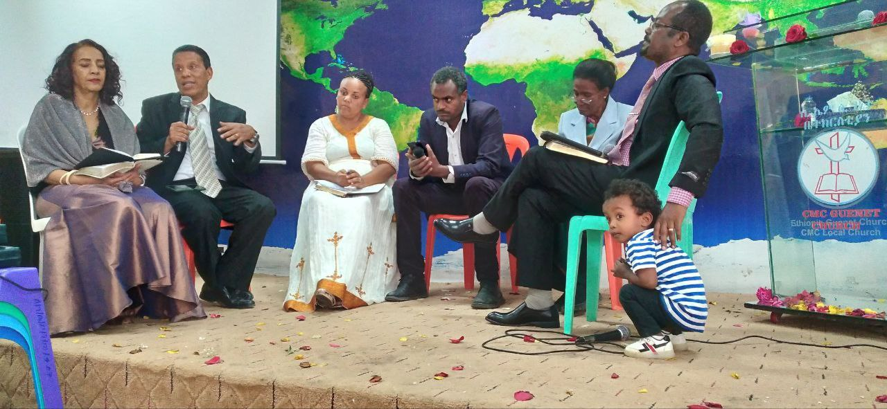
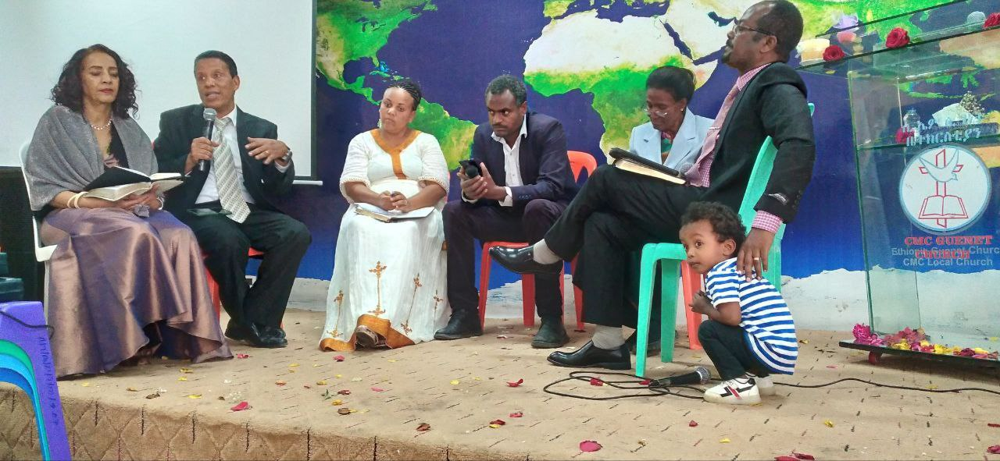

The Marriage & Family Ministry at Genet CMC Local Church focuses on strengthening couples and families through faith, love, and unity. We aim to build homes rooted in Christ, where relationships grow in harmony and understanding.
Our Mission
To empower couples and families with biblical principles that foster strong, Christ-centered relationships, creating homes filled with love, respect, and spiritual growth.
Programs & Activities
- Marriage enrichment seminars and family retreats
- Pre-marital and marital counseling sessions
- Parenting workshops and family prayer nights
- Community service and family outreach events
- Workshops on communication and conflict resolution
Marriage & Family in Pictures

 


Contact Marriage & Family Ministry
Email: marriageandfamily@cmcgenetchurch.org
Phone: +251 919078605